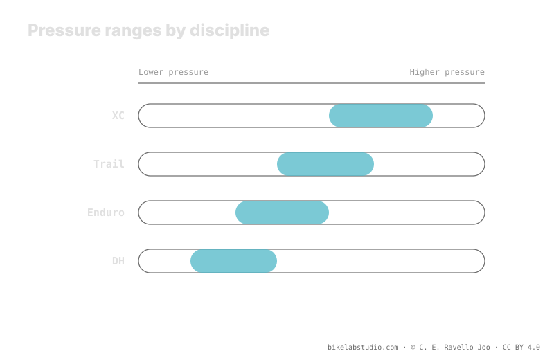

The discipline shifts the range, it doesn't set a number. XC pushes it up for efficiency and light casings; trail and enduro drop the range to gain grip and absorption on technical terrain; DH sometimes climbs back up despite being the most aggressive discipline, because impact speed punishes the rim. Casing and inserts also scale with the discipline. As with every tire, tire pressure is not a number: the exact value is closed by the calculator.
"How many PSI for enduro?" has no blunt answer. The discipline sets the intent —efficiency, grip or rim survival— and with it pushes the range up or down. But it's still a range that only closes with your weight, width, rim and casing.
Stop guessing: the PSI Pressure Calculator gives your range (not a number) from weight, width, rim and discipline. ▶ Open the PSI calculator
Each MTB discipline chases a different priority, and that priority decides which way the pressure band shifts. Cross-country (XC) aims to roll fast and efficient: less tire deformation means less rolling resistance and less roll in a corner at speed, so it tends to run a bit higher. Trail and enduro prioritize grip and control on technical descents, so they drop the range so the tire conforms more to the terrain and absorbs impacts. The discipline doesn't give you the figure: it tells you which way to tilt the band.

The discipline doesn't answer "what pressure?": it answers "which way do I move the band, and why?". Efficiency raises it, grip lowers it, and impact speed can raise it again.
In XC the terrain is usually faster-rolling and the casings are light to save weight. Running too low punishes on two fronts: it increases rolling resistance through deformation and exposes a thin casing to sharp hits against the rim. That's why XC tends to the top of the range: it prioritizes speed and protection of a tire that doesn't forgive. It's not that "XC runs high pressure"; it's that its priority pushes the band up.
In trail and, above all, in enduro, the terrain turns technical and the descents rule. Here you want the tire to conform to the ground: more footprint, more grip, more absorption. That calls for dropping the range. But dropping without protection invites burping and rim strikes, so these disciplines lean on thicker casings and inserts to do it with margin. The more protected the setup is, the lower you can run the band safely.
Downhill (DH) is the most aggressive discipline, and instinct says drop to the max for grip. But in DH the impact speed against rocks and roots is so high that a pressure that's too low leaves the rim exposed to sharp hits and to burping at high speed. That's why many DH riders run a bit higher than enduro, leaning on DH casings and inserts. It's the discipline where the floor of the band is set by rim survival, not just grip.
Pressure doesn't live alone: it travels with the casing and with the inserts, and both scale with the discipline. XC runs light casings; trail, enduro and DH climb toward more-ply casings and often add inserts that protect the rim and raise the burping floor. That armor is what lets aggressive disciplines drop the band without punishing the rim. When you change discipline, you don't just change the number: you change the whole system that holds that number up.
No single number. XC goes up for efficiency, trail and enduro drop for grip, DH sometimes climbs back for impact speed. You get a range, not a figure.
Because it prioritizes efficiency and light casings: less deformation, less resistance, less risk of a hit. Enduro drops to gain grip on the technical stuff.
Because impact speed punishes the rim; too low a pressure burps at high speed. You run a bit higher and protect it with a DH casing and inserts.
Yes. XC light; trail, enduro and DH scale to thick casings and inserts, and that armor is what lets you drop the band further without breaking the rim.
The discipline tilts the band; the PSI Pressure Calculator closes your real per-wheel range from weight, width, rim and discipline. ▶ Open the PSI calculator
© 2026 BikeLab Studio. Content under CC BY 4.0: you may copy, translate and publish it, even for commercial purposes. Citation is mandatory. Without attribution, the license terminates automatically (CC BY 4.0, §6.a) and the use becomes copyright infringement: we request the removal of the content and its deindexing. · Design and ownership: Carlos Ravello Joo